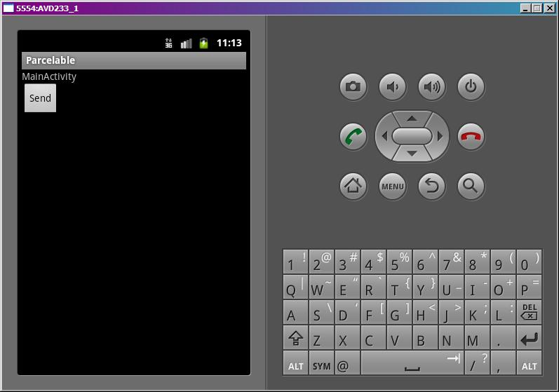
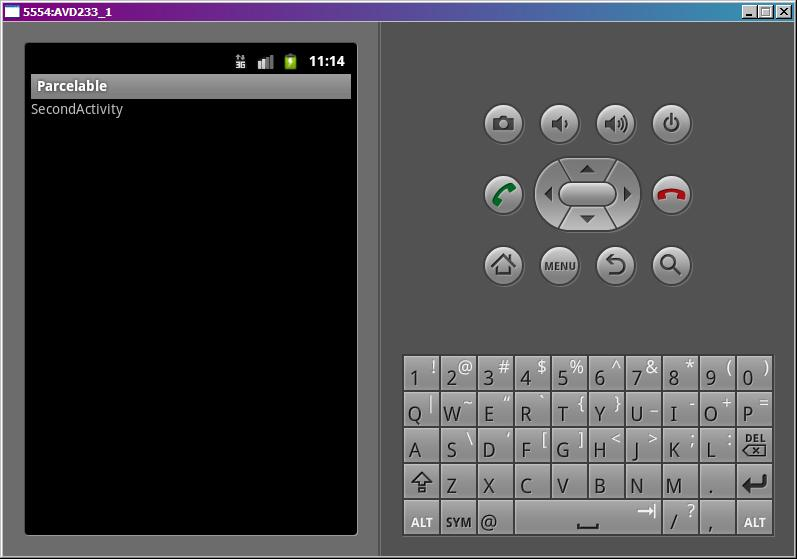

В этом уроке:
- добавляем объекту поддержку Parcelable
- передаем с помощью Intent
С Parcel мы немного поработали на прошлом уроке. Этих знаний хватит, чтобы понять, как реализовать в своем объекте интерфейс Parcelable. Создадим свой объект, реализуем в нем интерфейс Parcelable и попробуем передать в другое Activity через Intent.
Создадим проект:
Project name: P0691_Parcelable
Build Target: Android 4.0
Application name: Parcelable
Package name: ru.startandroid.develop.p0691parcelable
Create Activity: MainActivity
В strings.xml пропишем тексты:
<?xml version="1.0" encoding="utf-8"?>
<resources>
<string name="main">MainActivity</string>
<string name="second">SecondActivity</string>
<string name="send">Send</string>
<string name="app_name">Parcelable</string>
</resources>В main.xml нарисуем кнопку:
<?xml version="1.0" encoding="utf-8"?>
<LinearLayout
xmlns:android="http://schemas.android.com/apk/res/android"
android:layout_width="fill_parent"
android:layout_height="fill_parent"
android:orientation="vertical">
<TextView
android:layout_width="fill_parent"
android:layout_height="wrap_content"
android:text="@string/main">
</TextView>
<Button
android:id="@+id/button1"
android:layout_width="wrap_content"
android:layout_height="wrap_content"
android:onClick="onclick"
android:text="@string/send">
</Button>
</LinearLayout>Перед тем как писать MainActivity.java, создадим свой объект для передачи MyObject.java:
package ru.startandroid.develop.p0691parcelable;
import android.os.Parcel;
import android.os.Parcelable;
import android.util.Log;
public class MyObject implements Parcelable {
final static String LOG_TAG = "myLogs";
public String s;
public int i;
// обычный конструктор
public MyObject(String _s, int _i) {
Log.d(LOG_TAG, "MyObject(String _s, int _i)");
s = _s;
i = _i;
}
public int describeContents() {
return 0;
}
// упаковываем объект в Parcel
public void writeToParcel(Parcel parcel, int flags) {
Log.d(LOG_TAG, "writeToParcel");
parcel.writeString(s);
parcel.writeInt(i);
}
public static final Parcelable.Creator<MyObject> CREATOR = new Parcelable.Creator<MyObject>() {
// распаковываем объект из Parcel
public MyObject createFromParcel(Parcel in) {
Log.d(LOG_TAG, "createFromParcel");
return new MyObject(in);
}
public MyObject[] newArray(int size) {
return new MyObject[size];
}
};
// конструктор, считывающий данные из Parcel
private MyObject(Parcel parcel) {
Log.d(LOG_TAG, "MyObject(Parcel parcel)");
s = parcel.readString();
i = parcel.readInt();
}
}Объект сам по себе несложный: пара переменных s и i, и конструктор. Все остальное используется для реализации Parcelable. Давайте смотреть.
Про метод describeContents ничего сказать не могу. Я не понял, зачем он нужен.
В методе writeToParcel мы получаем на вход Parcel и упаковываем в него наш объект. Т.е., в нашем случае, помещаем туда переменные s и i. flags не используем.
CREATOR типа Parcelable.Creator<MyObject> используется для создания экземпляра нашего MyObject и заполнения его данными из Parcel.
Для этого используется его метод createFromParcel, который мы должны реализовать. На вход нам дается Parcel, а вернуть мы должны готовый MyObject. В нашем примере мы используем здесь конструктор MyObject(Parcel parcel), который реализован чуть дальше.
Смысл метода newArray остался для меня непонятен.
Конструктор MyObject(Parcel parcel) принимает на вход Parcel и заполняет объект данными из него. Этот метод использовался нами чуть ранее в CREATOR.createFromParcel.
Создадим второе Activity, в которое будем передавать объект.
Сначала создаем экран second.xml:
<?xml version="1.0" encoding="utf-8"?>
<LinearLayout
xmlns:android="http://schemas.android.com/apk/res/android"
android:layout_width="match_parent"
android:layout_height="match_parent"
android:orientation="vertical">
<TextView
android:id="@+id/textView1"
android:layout_width="wrap_content"
android:layout_height="wrap_content"
android:text="@string/second">
</TextView>
</LinearLayout>Кодим SecondActivity.java:
package ru.startandroid.develop.p0691parcelable;
import android.app.Activity;
import android.os.Bundle;
import android.util.Log;
public class SecondActivity extends Activity {
final String LOG_TAG = "myLogs";
protected void onCreate(Bundle savedInstanceState) {
super.onCreate(savedInstanceState);
setContentView(R.layout.second);
Log.d(LOG_TAG, "getParcelableExtra");
MyObject myObj = (MyObject) getIntent().getParcelableExtra(
MyObject.class.getCanonicalName());
Log.d(LOG_TAG, "myObj: " + myObj.s + ", " + myObj.i);
}
}Мы вытаскиваем наш MyObject-объект из Intent и в лог выводим значения s и i.
Кодим MainActivity.java:
package ru.startandroid.develop.p0691parcelable;
import android.app.Activity;
import android.content.Intent;
import android.os.Bundle;
import android.util.Log;
import android.view.View;
public class MainActivity extends Activity {
final String LOG_TAG = "myLogs";
/** Called when the activity is first created. */
public void onCreate(Bundle savedInstanceState) {
super.onCreate(savedInstanceState);
setContentView(R.layout.main);
}
public void onclick(View v) {
MyObject myObj = new MyObject("text", 1);
Intent intent = new Intent(this, SecondActivity.class);
intent.putExtra(MyObject.class.getCanonicalName(), myObj);
Log.d(LOG_TAG, "startActivity");
startActivity(intent);
}
}Создаем Intent, помещаем туда объект MyObject. В качестве ключа используем его имя класса (разумеется, это необязательно, вы можете свое имя использовать). И отправляем Intent с вызовом SecondActivity.
Все сохраним и запустим приложение.

Жмем Send, Intent уходит в SecondActivity

Смотрим лог:
MyObject(String _s, int _i)
startActivity
writeToParcel
getParcelableExtra
createFromParcel
MyObject(Parcel parcel)
myObj: text, 1
Сначала вызвался конструктор MyObject(String _s, int _i) – это мы создали myObj.
startActivity – начинаем вызов Activity
writeToParcel - мы поместили объект в Intent, и похоже, что при отправке он упаковался в Parcel. Т.к. сам Parcel не знает, как именно упаковать объект, он вызвал метод writeToParcel, где мы реализовали упаковку.
getParcelableExtra – извлекаем объект из Intent
createFromParcel – это был вызван метод CREATOR.createFromParcel, которому на вход дали Parcel, а он должен вернуть MyObject. Этот метод в свою очередь для создания MyObject использует конструктор MyObject(Parcel parcel), в котором мы расписали, как надо читать Parcel и заполнить объект.
myObj: text, 1 – вывели в лог значения объекта.
Итак. Чтобы нам передать объект через Intent, нам надо реализовать в нем интерфейс Parcelable. В этом случае Intent без проблем запакует, передаст и распакует наш объект. И я так подозреваю, что делает он это с помощью Parcel. Т.е. в реализации интерфейса Parcelable мы полностью описываем алгоритм упаковки и распаковки объекта, а Parcel эти алгоритмы потом использует. Т.к. сам он не может знать, как правильно распаковать и создать передаваемый объект.
Если кто разберется, зачем нужны непонятые мною методы – пишите на форуме в ветке этого урока. Я добавлю вашу инфу в урок.